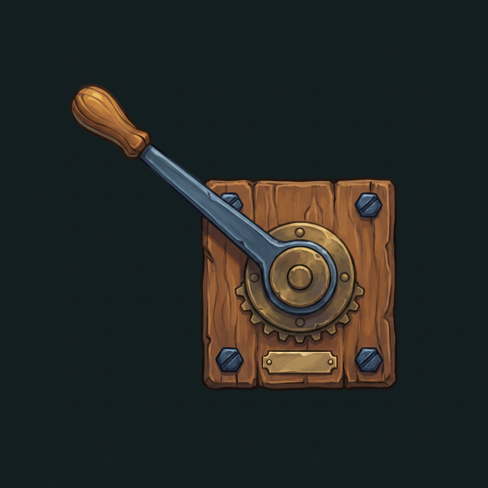
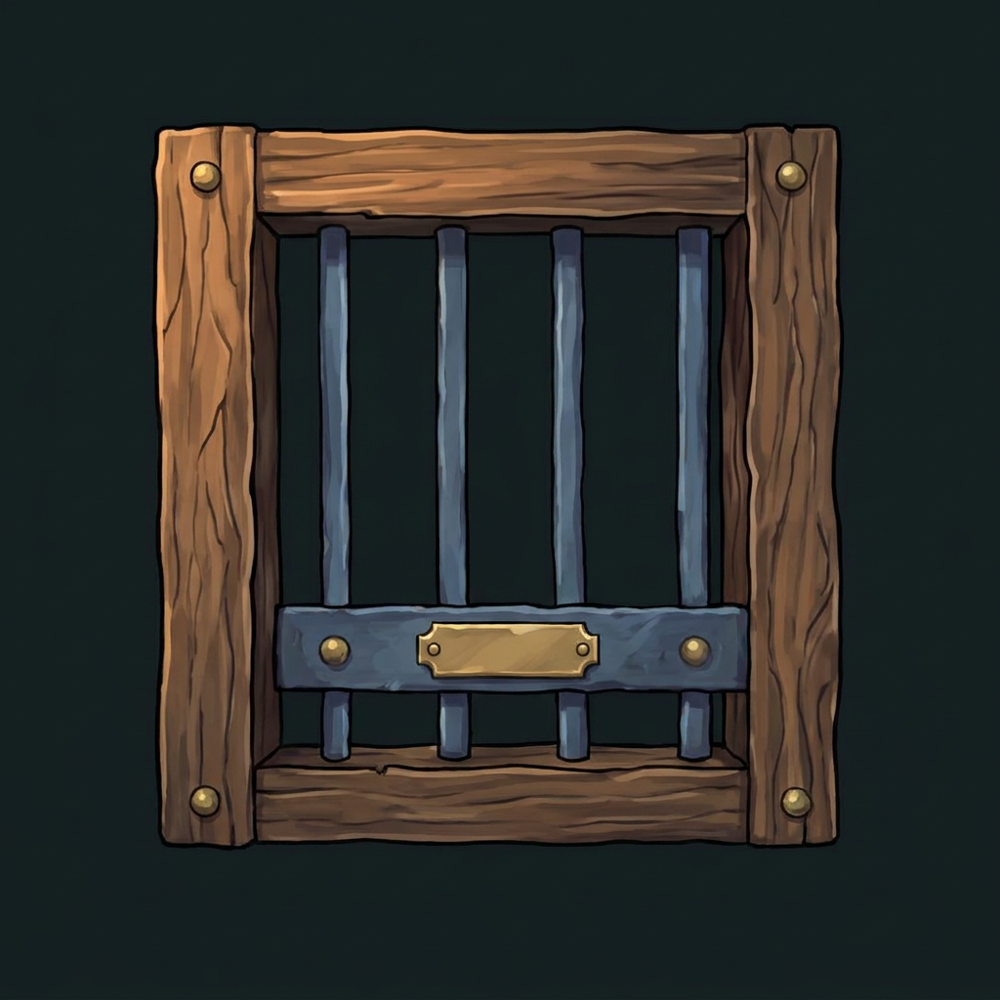

Lathmar: Emerald Hollows · Entwürfe vom 18.10.2026
Werkzeuge, die zur Mine gehören.
Neue Runway-Motive für Hebel und Tor. Eichenholz, blaugraues Eisen und Messing greifen den Stil der vorhandenen Spielgrafik auf.
Historische Entwürfe · Motive seit 0.7 im Spiel
Stand 0.7: Der freigestellte Arm samt Zahnrad sitzt direkt an der Höhlenwand. Das offene Tor verwendet dieselben Rahmenstücke wie das geschlossene. Diese Seite bewahrt die ursprünglichen Entwürfe; den aktuellen Stand zeigt das Spiel.
Der Hebel

40 px64 px96 px
Ein klarer Arm und ein kräftiger Drehpunkt. Für die Animation werden Grundplatte und Arm getrennt. Die Kennung kommt später als scharfe Beschriftung darüber.
Das Schiebetor

40 px64 px96 px
Ein schweres Gitter statt einer zweiten Ausgangstür. Für das Öffnen soll das Gitter im festen Rahmen nach oben fahren; diese offene Ansicht ist noch zu erstellen.
Die Bilder sind unveränderte Rohentwürfe mit dunklem Hintergrund. Freistellung, bewegliche Einzelteile und Prüfung in einer echten Spielszene folgen erst bei der Integration. Der Steinspender soll dieselben Materialien erhalten.
Produktion und verworfene Versuche
56 Credits netto für diese Runde, einschließlich der beiden verworfenen Bilder. Ein fehlgeschlagener Auftrag wurde zunächst mit 8 Credits belastet; die Kontobilanz ergibt eine Rückerstattung. Projektstand: 236 von 1.000 Credits netto; konservativ ohne Anrechnung der Erstattung 244.
Erster Hebel: zu hammerartig · Erstes Tor: unerwünschte Schrift und Hintergrund · Prompts und Aufträge
Auswertung der veröffentlichten Bestzeiten
Mehr Höhle zwischen den Rätseln.
17,7 sDurchschnitt Level 11–20 · Mufti999
2 Fundegenügen derzeit im Testweg von Level 14
92 Felderohne feste Mauer im Raster von Level 20
Die Außenmaße sind groß, der eigentliche Spielraum ist klein. Ab der vierten Höhle eines Kapitels sollen mehrere Fundgebiete und sinnvolle Rundwege die Aufgabe tragen. Die bekannten Mechaniken helfen dabei, diese Höhle zu erschließen.
Vollständige Recherche, Quellen, alle Bestzeiten und Ausbauplan für 11–20